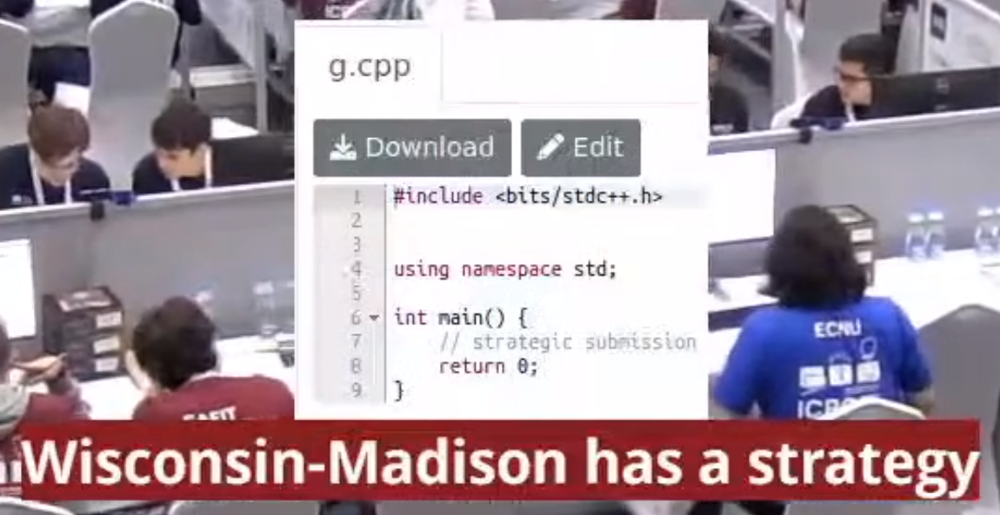

2022 ISSC 題解
本來沒有打算打所有題目的題解的，因為題目應該也沒有難到會有人想看所有題目的解。不過出於強迫症我還是嘗試把每題的題解打出來了。
出題心得以及觀賽心得還沒寫完，寫完再更新連結。
我寫的每題 AC Code 還有題本會放到 GitHub 裡面，但先讓我整理一下。
Problem A. Write-Only-Once Memory
題目大意
解法
以下用 \(n\) 代表 \(s\) 中以空白字元切出的字串數量。
先利用 getline 與 stringstream
將輸入讀進來，顯然重要的只有字串的長度，於是問題從一堆字串們變成了一陣列的數字們。
觀察到題目給出的條件是 \(\text{cost}_{i,j} = \min\limits_{i \le k < j}\{\text{cost}_{i,k} + \text{cost}_{k+1,j} + 1\}\)，顯然可以直接遞迴 DP 在 \(\mathcal{O}(n^3)\) 解決，base case 就是 \(\text{cost}_{i,i} = \text{length of the \(i\)-th string}\)。
另外，利用轉移點單調的性質可以更進一步壓到 \(\mathcal{O}(n^2)\)，但不需要這樣做也能通過本題。
Problem B. Schedule for Nursing
題目大意
解法
待補。
Problem C. Exponentiation
題目大意
解法
觀察到 \(2^n\) 尾數是 \(1, 2, 4, 8, 6, 2, 4, 8, 6, \ldots\) 循環，於是就判斷 \(n \bmod{4}\) 是多少以及特判 \(n = 0\) 的 case。
實作上只要利用 \(n\) 的末兩位數即可得到除以 \(4\) 的餘數。
Problem D. Isosceles Triangle
題目大意
解法
枚舉每個點 \(v\)
當成等腰夾的那個點並計算出 \(v\)
跟其他所有點的距離，最後使用 std::map 來求出有幾個離 \(v\) 距離相同的點對。
注意到若是所有點都為格子點，則不會構成正三角形，不會有重複計算的情形。
實作上最好是儲存距離平方，避免因為精度誤差導致吃 Wrong Answer。
Problem E. Derangement
題目大意
解法
Problem F. Shengdiyage city
題目大意
解法
對沒被拜訪過的空格做 BFS，並在每次做 BFS 時把答案 \(+1\)。
Problem G. Strings without Four Consecutive Same Symbols
題目大意
解法
待補。
Problem H. Packing Rectangles
題目大意
解法
記得使用 std::map 來存，還有要記得初始化。
待補。
Problem I. International Strategic Submission Contest
背景故事
原本沒有故事的版本在一年半前（2021.03.06）就出完了，只不過一開始的複雜度是帶 \(\text{lcm}{(1, 2, \ldots, R)}\) 的版本，因為覺得可以做到更好就一直擱著了。
而本題分配到的程度是難題，而本來想出
- 秘密 \(\to\) 燒雞
- 定理題 \(\to\) 生一半
- 矩陣乘法 + NTT \(\to\) 燒雞
- 秘密 + Kruskal + 虛樹 \(\to\) 燒雞
- 秘密 + 秘密 \(\to\) 生一半
都失敗了，最後這題就被重新翻出來想有沒有更好的解，最後是想到了一個只帶 \(R\) 的作法。不過我還是覺得有只帶 \(\text{polylog}(R)\) 的解。
題敘部分的靈感是今年 ICPC World Final 時有隊伍提出了 "strategic submission"。

決定選了這題之後就打算取可以使縮寫是 ISSC 的 "International Strategic Submission Contest" 當作題目名稱；決定完題目名稱之後就是決定要放什麼敘述，最後是套「機器人比賽」跟可愛的拉菲進去。
題目會這麼長的另一個原因單純是我想要試試看出題敘長的題目，雖然在 AtCoder 看到的題敘往往都非常簡短，且其實這題原本敘述也才五六行而已，但是看著 ICPC 上屢屢能寫到四五頁的題目也不禁讓我想試試看出題敘長一點的題目。
這題的英文題敘大部分是用 Grammarly 糾正出來的，事實證明它對於含有數學算式的文章很難抓出文法錯誤。而在生完題敘之後不久 ChatGPT 橫空出世，所以現在我基本上都是用那個來幫忙翻譯題敘跟題解了 >////<
題目大意
12.26 公布。
解法
12.26 公布。
Problem J. Christmas Padoru
背景故事
這題的定位是中等難度的題目，但結果是變成第二難的題目，其實還挺出人意料的 OAO
一開始我想生的是互動或構造題，簡單來說就是需要動更多腦而且相對一般來說更困難的題目。最後因為遲遲沒有好的互動靈感，就打算生一題序列的構造題。我記得 2020 年好像有一題是「構造 \(n\) 個數字的排列，使逆序數對數量恰為 \(k\)」相當經典，於是我想要找到一個不那麼 trivial 的 idea 來要求構造。
在 ISSC 開放報名時看到 PixelCat 徵隊友的貼文，之後獲得出題權後就打算出一題題敘裡有 Nachoneko 的題目（結果 PixelCat 整場都沒看那題 ._.），就套了一個帶有一點點數學的題目上去。
題目大意
12.26 公布。
解法
12.26 公布。